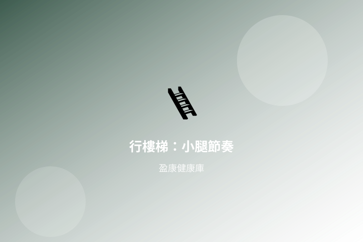
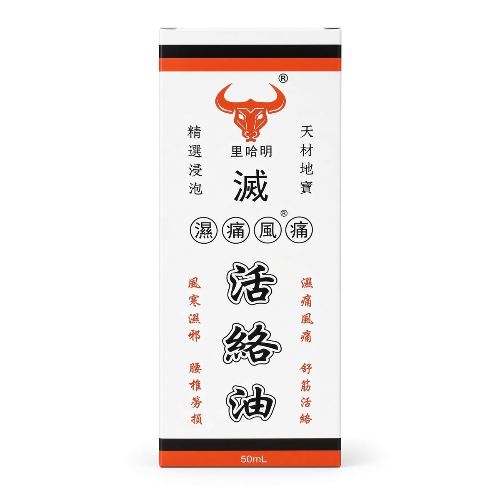

行樓梯過久，小腿發緊？三個上下樓小節奏

在港日常常見要行樓梯：轉車、舊樓、行人天橋。連續上落幾層後，小腿後側容易發緊、發沉。這多半來自同一組肌肉連續出力、又缺少停步與到平地後的活動，不一定代表身體出了大問題。先把分段停步、放慢步幅與到站後輕活動，排進上下樓節奏。以下三個做法屬一般健康資訊，非醫療建議；本文並非診斷、治療或預防疾病之用，亦不構成《不良廣告（醫藥）條例》（Cap.231）或《中醫藥條例》下之醫療宣稱。
1. 在轉角平台分段停一停，不要一口氣趕完所有樓層
上樓梯時可把節奏放慢，一步一步踏穩，不要憋氣催趕。每上一兩層，若有平台或較寬處，可停十至二十秒，再繼續上落。手可輕扶穩固扶手以保持平衡，但不要把全身重量掛在扶手上。這屬日常上下樓節奏，不是治療方案。
- 先顧踏穩與附近行人安全，攜物時不要邊行邊看手機。
- 若出現劇烈疼痛、明顯腫脹、站立不穩、胸悶氣促，或原有腿部不適突然加重，應停止自行調養並諮詢合適專業人士。
2. 到平地後先走幾步，再輕輕活動足踝與小腿
到頂層或地面後，不要立刻坐下把雙腿收緊，也不要馬上再趕下一段路。可先在平地輕走二十至三十秒，再輕輕點腳、活動足踝，讓小腿由連續出力轉入較放鬆的步伐。幅度宜小，不必用力拉扯。這屬到站後的緩衝節奏，不是醫療建議。
3. 外用活絡油作小腿日常舒緩選購參考
若上下樓後常自覺小腿後側發緊，可先瀏覽標示筋骨方向的外用油劑規格與標籤，對照適用部位、使用方法與注意事項，並以產品標籤為準。這屬日常舒緩與選購小知識，不是療效保證，亦非診斷、治療或預防疾病。皮膚敏感、破損、孕婦、兒童或對成分敏感者請先諮詢合適專業人士。勿將外用油塗於破損皮膚，亦避免接觸眼部與黏膜。
盈康小提示：可把「上兩層就在平台停一停＋到平地先走幾步再坐＋外用先讀標籤」設成上下樓固定節拍。外用請先讀清標籤，勿塗於破損或敏感皮膚。
想了解更多膏布、口服與噴霧系列，可瀏覽所有產品，或 WhatsApp 6222 7238 查詢。
推薦產品

滅濕痛風痛活絡油 50ml
外用油日常選購時，可對照這款的標籤適用部位與注意事項；並非處理行樓梯後小腿發緊之用。
瀏覽產品詳情 →健步虎潛丸 320粒
若想對照另一款口服的規格與標籤用量，可瀏覽此款；並非針對行樓梯後小腿發緊之用。
瀏覽產品詳情 →